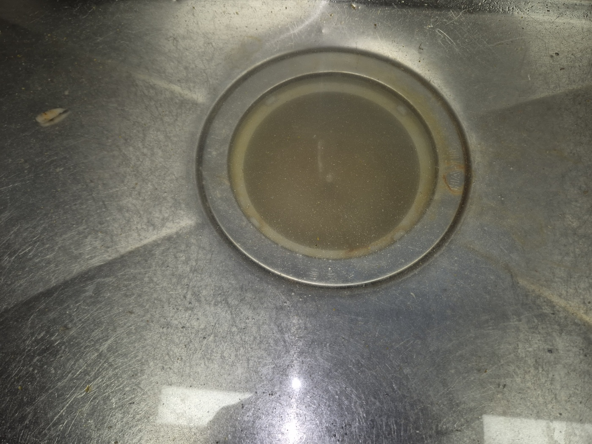
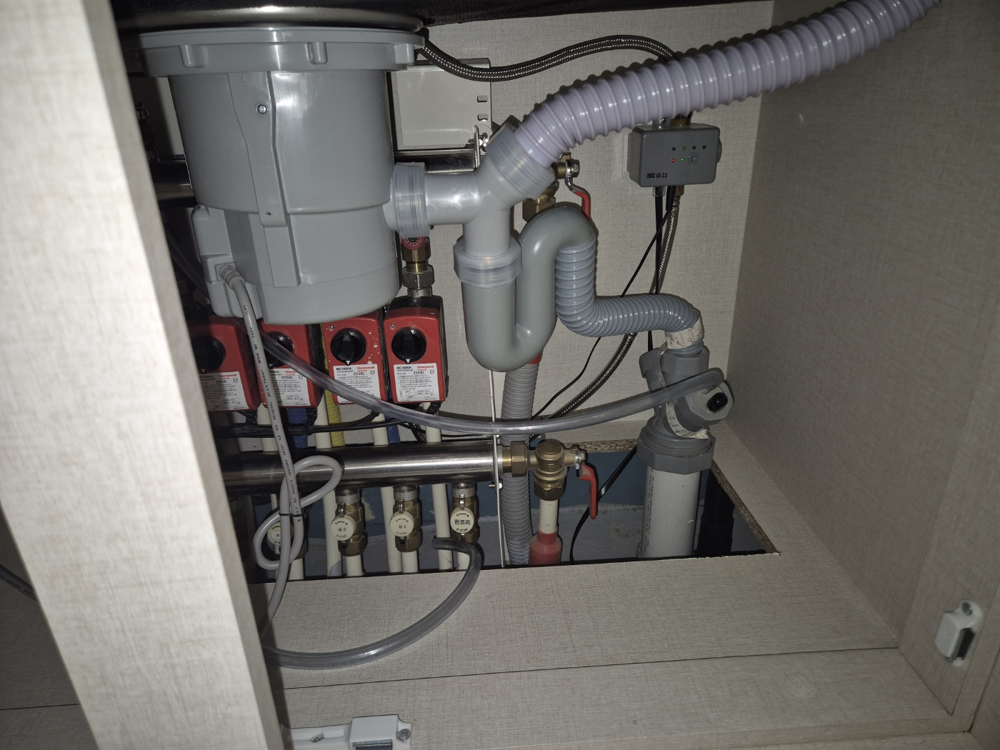
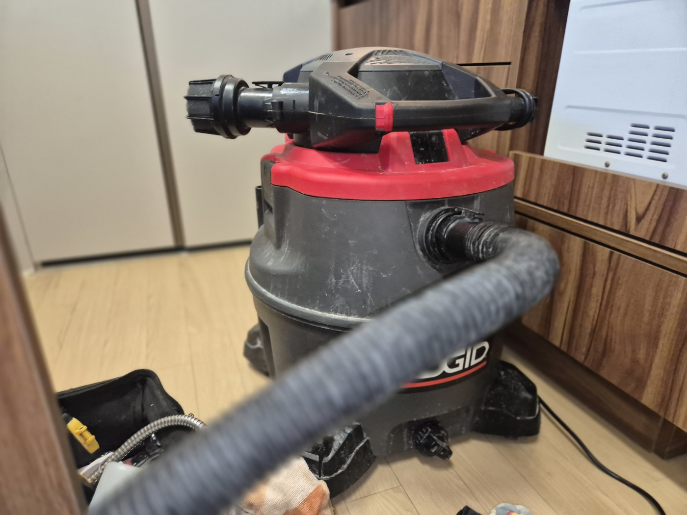
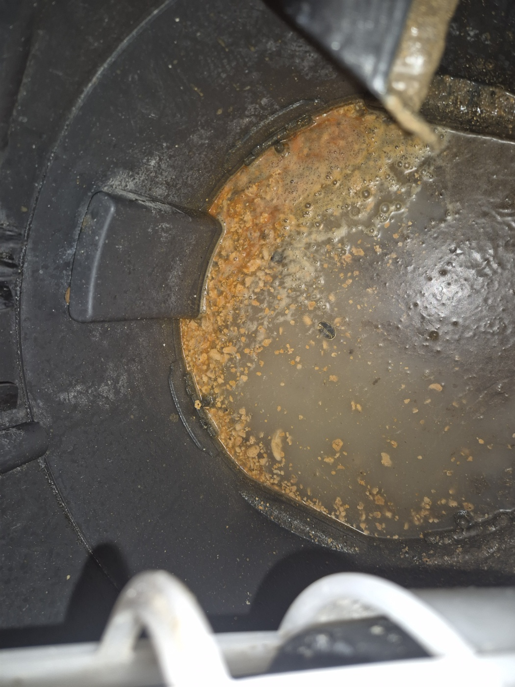
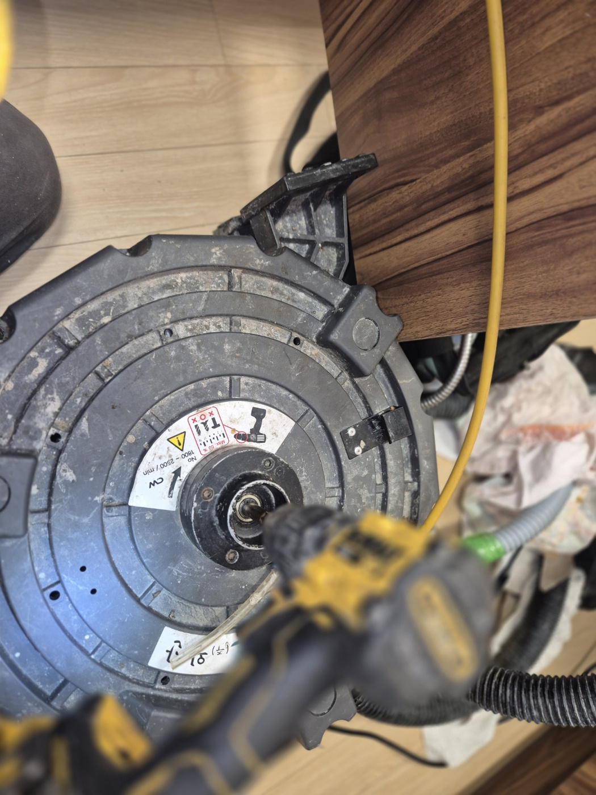
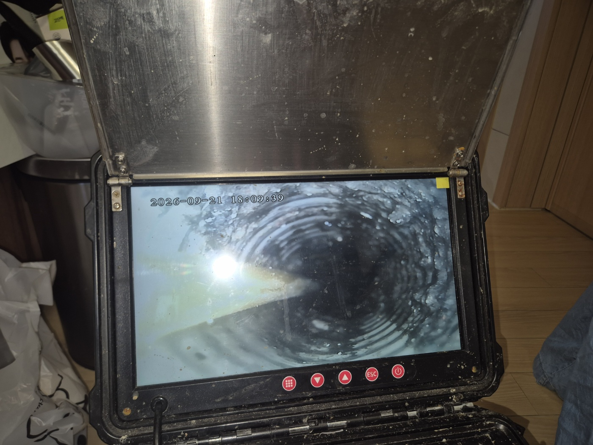
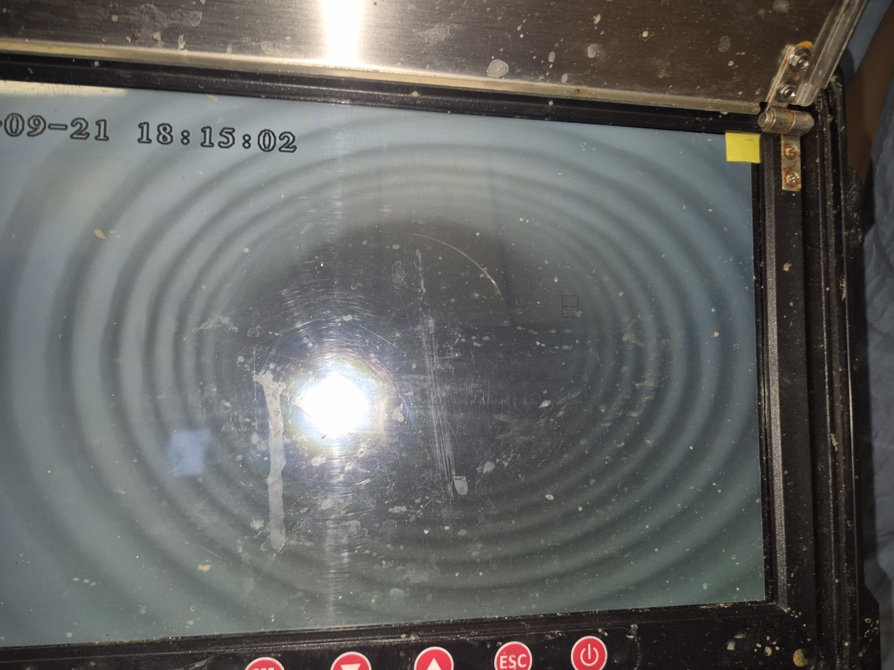
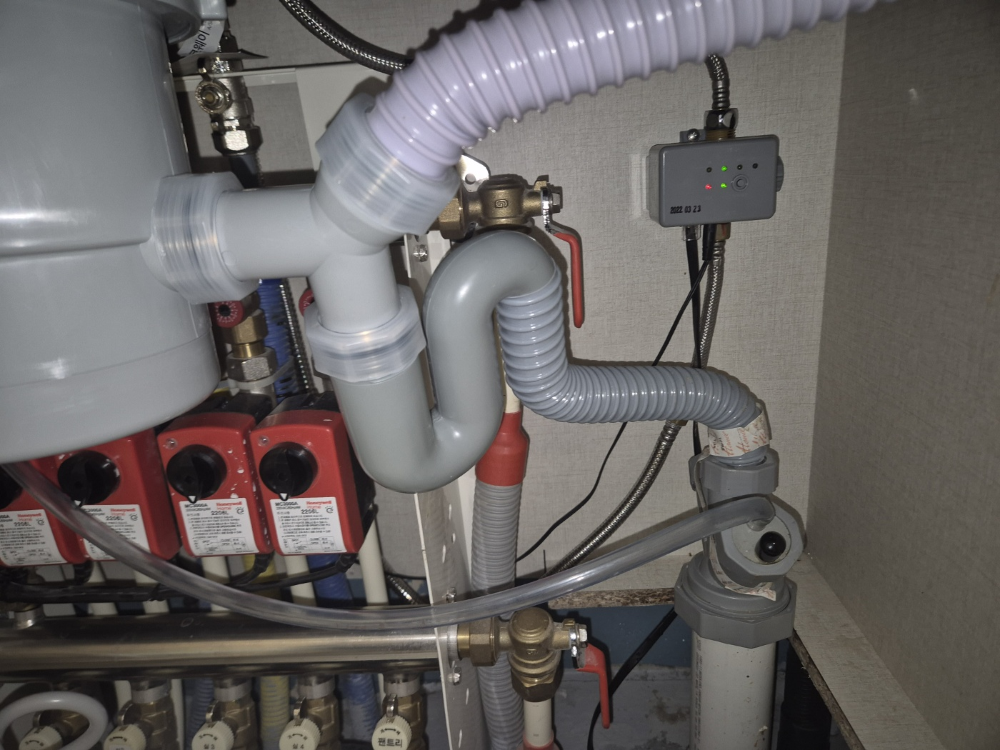

안녕하세요.. 고고고 설비입니다.. 오늘은 천안시 불당동에 있는 아파트에서 싱크대막힘, 하수구막힘 신고를 받고 다녀온 현장입니다. 설거지물이 빠지지 않고 계속 고여있다고 하셨고, 저녁 시간이라 서둘러 출동했어요.
하부장 안쪽 온수 분배기함 쪽 배관부터 확인했습니다. 여러 배관이 한곳에 모여있는 구조라 연결부를 하나씩 짚어가며 점검했어요. 좁은 공간에 배관과 센서 박스가 빽빽하게 들어차 있어서 작업 공간부터 확보해야 했습니다.

셕션 장비를 세팅해서 배관 안쪽 이물질을 빨아들일 준비를 했습니다.

작업을 진행해보니 통 안에 누런 이물질이 거품과 함께 섞여 나왔어요.

셕션만으로는 부족한 구간이 있어서 전동 샤프트 장비를 추가로 투입해 배관 안쪽을 반복해서 뚫어나갔습니다.

작업 중간중간 내시경으로 배관 안쪽 상태를 확인하면서 진행 상황을 체크했습니다.


작업을 마치고 배관을 다시 정리한 뒤 물을 내려서 정상적으로 배수되는 걸 최종 확인했습니다. 저녁 늦은 시간이었는데도 바로 설거지를 다시 하실 수 있을 정도로 시원하게 뚫렸어요.

아파트 싱크대 배관은 기름때가 조금씩 쌓이다가 한 번에 막히는 경우가 많습니다. 설거지 후 뜨거운 물을 흘려보내시고, 배수가 느려지는 초기 신호가 있을 때 미리 점검받으시는 걸 권해드립니다.
고고고 설비는 주택, 아파트, 원룸, 상가, 공장의 생활 하수 오수 배관을 관리해 주는 업체입니다. 고고고 설비에 전화 주시면 친절상담 정확한 진단 확실한 해결로 보답해 드리겠습니다!!